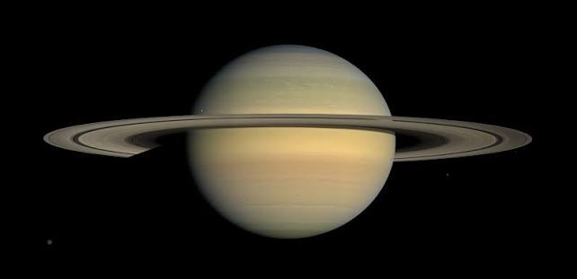

Saturno è il sesto pianeta del sistema solare in ordine di distanza dal Sole e il secondo pianeta più massiccio, subito dopo Giove.
Rispetto alla Terra, ha un raggio medio 9,48 volte maggiore e una massa 95 volte superiore. Saturno è classificato come gigante gassoso, insieme a Giove, Urano e Nettuno,[6] ed è composto per il 95% da idrogeno e per il 3% da elio, a cui seguono gli altri elementi; il nucleo, consistente in silicati e ghiacci, è circondato da uno spesso strato di idrogeno metallico e quindi da uno strato esterno gassoso.[7] Il pianeta ha un esteso e vistoso sistema di anelli esterni, che consistono principalmente in particelle di ghiaccio e polveri di silicati. Insieme agli anelli, orbitano 293 lune conosciute,[3] e per questo Saturno detiene il primato per il maggior numero di satelliti, nel sistema solare.